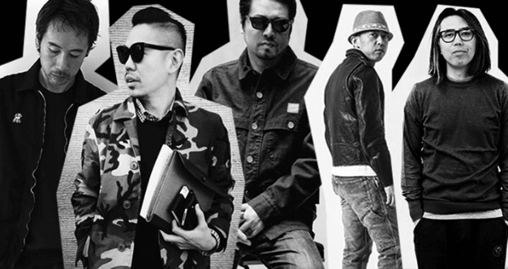
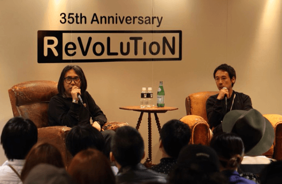
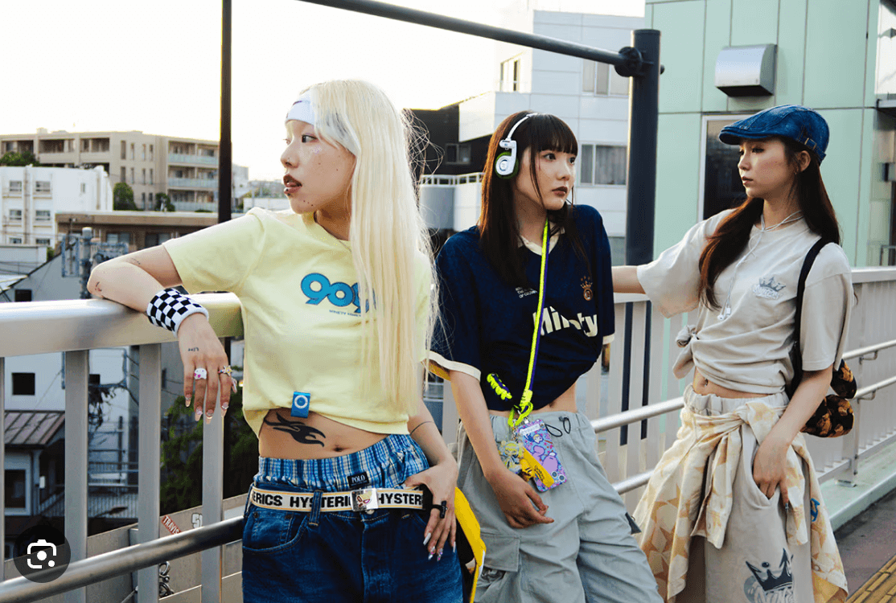

ISSUE. 001
東京潮複習
90年代東京街頭文化的心臟，裏原宿正迎來一場「再次新生」。本專題深入分析設計師如何將服飾、音樂、獨立精神融入潮流，持續創造日本的青年文化。
撰文 | Tokyo Insider
2025.10.26
90年代的黃金三角：文化雜貨屋的創世紀
要理解裏原宿，必須回到 1990 年代初的黃金時代。當時，藤原浩（Hiroshi Fujiwara）、高橋盾（Jun Takahashi of Undercover）、NIGO（A Bathing Ape 創辦人）等核心人物，通過他們開設在貓街（Cat Street）或隱密巷弄中的「文化雜貨屋」，創造了一種全新的街頭文化。這些店鋪販售的不是昂貴的奢侈品，而是帶有強烈自我意識的 T 恤、限量球鞋和獨立音樂唱片。

藤原浩等人在 90 年代通過獨立文化雜貨屋，奠定了裏原宿的街頭教父地位。
藤原浩被譽為「裏原宿教父」，他不僅是設計師，更是透過音樂和 DJ 身份，將龐克、嘻哈等地下文化帶入主流，定義了何謂「酷」。NIGO 的 BAPE 則以獨特的迷彩和猿人頭標誌，將裏原宿的限量、排隊文化推向高峰，讓服飾成為一種投資和身份的象徵。
從隱密到開放：新時代的複合美學
時至今日，雖然當年隱藏在巷弄中的「文化雜貨屋」模式已逐漸淡出，但裏原宿的精神並未消失，而是轉化為一種更具複合性、更強調體驗的「再次新生」。以 BEAMS 為例，它早已超越服飾店的定義，成為涵蓋時尚、家居、藝術、音樂的複合式文化提案者。

新裏原宿的代表，BEAMS 不僅是服飾店，更是涵蓋生活、藝術的複合式文化中心。
新的裏原宿，更像是一個巨型的選物店，例如，像「東京天國」（Tokyo Heaven）這樣融合了獨立音樂、藝術家聯名、和實驗性服裝的空間，展示了青年文化如何持續通過跨界合作來表達自我。這種開放的姿態，不再排斥主流，而是利用自身強大的文化編碼能力，持續影響著全球的潮流風向。
音樂與服飾：青年文化的兩種語言
裏原宿的靈魂始終是音樂。從藤原浩擔任 DJ 時將文化脈動帶入品牌，到現在許多獨立店鋪內部播放的實驗音樂、獨立樂團唱片，音樂始終是服飾設計背後的哲學支撐。青年們通過挑選 T 恤上的圖案和聆聽的音樂，來傳達他們對社會、對美學的態度。

服飾與音樂是裏原宿青年文化表達獨立精神的兩大載體。
這場「潮複習」不僅是追溯歷史，更是見證一種文化主權的實踐。裏原宿的設計師們用身體力行，證明了本土文化可以成為全球潮流的定義者。無論是當年的 BAPE 還是今日的複合式選物店，裏原宿的基因——**反叛、限量、獨立、協作**——依然是東京青年文化最鮮明的標誌。